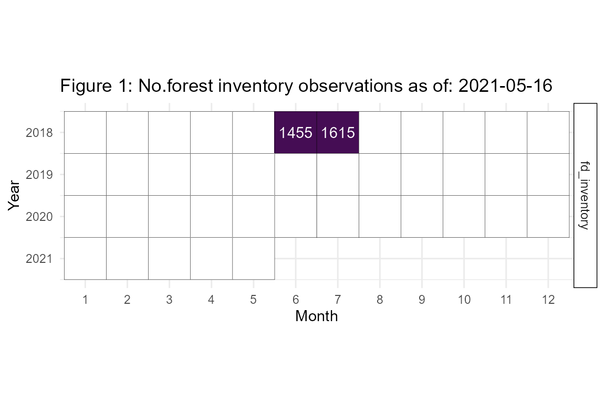
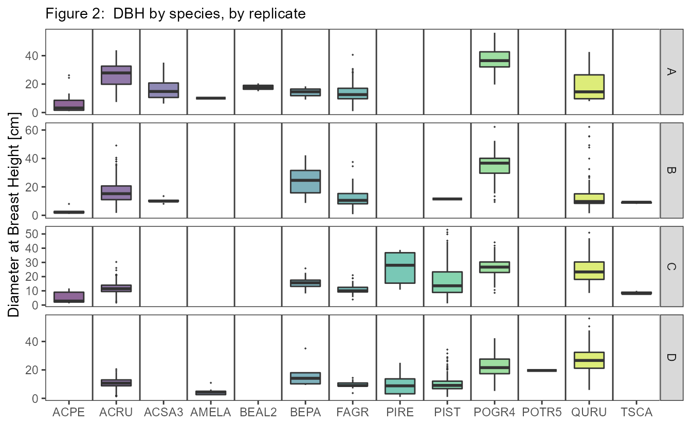
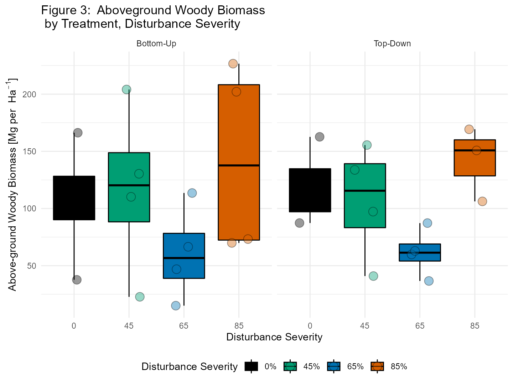

vignettes/fd_inventory_vignette.Rmd
fd_inventory_vignette.RmdEach tree in FoRTE’s 32 subplots above 8 cm in diameter-at-breast-height (DBH) is tagged, measured, and monitored over time. These data are compiled in the fd_inventory data set, described in detail below. In short, these data are traditional forest inventory data. They include:
Tree DBH in cm (dbh_cm) measured as the average of two caliper measurements taken with a Haglof Postex PDII Inventory Unit and Caliper Set. Initial measurements were taken in 2018, with intention of remeasurement at 4 to 5 year intervals with the first remeasurmennt slated for 2022. This time interval is chosen based on previous experience at the University of Michigan Biological Station. Given the slow tree growth rates at the station’s latitude, a 4 to 5 year measurement interval insures that growth will outpace measurment error.
Canopy status (canopy_status) is recorded in this dataset where OD = overstory dominant, UN = understory, OS = overstory submissive, SA = sapling, and NA is a blank or missing record.
Tree health status (health_status) where D = dead, M = moribund, and L = live
Species (species) using the USDA Taxon system (e.g. FAGR is Fagus grandfolia, QURU is Quercus rubra, etc.).
Tree individual identifier (tag) as the 4 digit tree tag number.
These data were originally collected in 2018, pre-disturbance. For stem-girdled tree information, i.e. which trees were targeted for mortality, see fd_mortatlity().
fortedata is an evolving, open-science data package with data updated in near-real time. The current inventory observations available as of 2021-03-11 are detailed in Figure 1. Remeasurement is slated to occur in the summer of 2022.

The fd_inventory() script within fortedata currently includes one function:
fd_inventory() returns a single dataset of the forest inventory data, including diameter-at-breast height (DBH), latitude, longitude, and biomass for each measured stem, as well as information on vitality and canopy position. There are 3165 observations in the dataset, all measured in 2018.
fd_inventory()
## Warning in data_conditions(inv, published = FALSE, contact_person, citation):
## These data are unpublished. Please contact Jeff Atkins to ask about using
## Data citation: ESSD
## Contact person: Jeff Atkins
###Species Abbreviations for Figure 2: ACPE - Acer pensylvanicum; ACRU - Acer rubrum; ACSA3 - Acer saccharum; AMELA - Amelanchier Medik.; BEAL2 - Betula alleghaniensis; BEPA - Betula papyrifera; FAGR - Fagus grandifolia; PIRE - Pinus resinosa; PIST - Pinus strobus; POGR4 - Populus grandidentata; POTR - Populus tremuloides; QURU - Quercus rubra; TSCA - Tsuga canadensis. Abbreviations are from the USDA PLANTS list.
Biomass can be calculated from fd_inventory() by using the function calc_biomass().

In figure 3 we show above-ground woody biomass at the plot level. This can be done by summing the biomass estimates to the plot level and then multiplying by 0.001 to convert kg to Mg and then multiplying that value by 10 to scale from 0.1 ha to 1 ha as follows:
# group the data by your factor of interest, here we show how the data are summed in Figure 3.
x %>%
group_by(subplot_id, disturbance_severity, treatment) %>%
summarize(biomass_plot = sum(biomass)) -> y
# Above, y$biomass is in units of kg per 0.1 ha. We want to convert to Mg per ha
y$biomass_mg_ha <- y$biomass_plot * 0.001 * 10